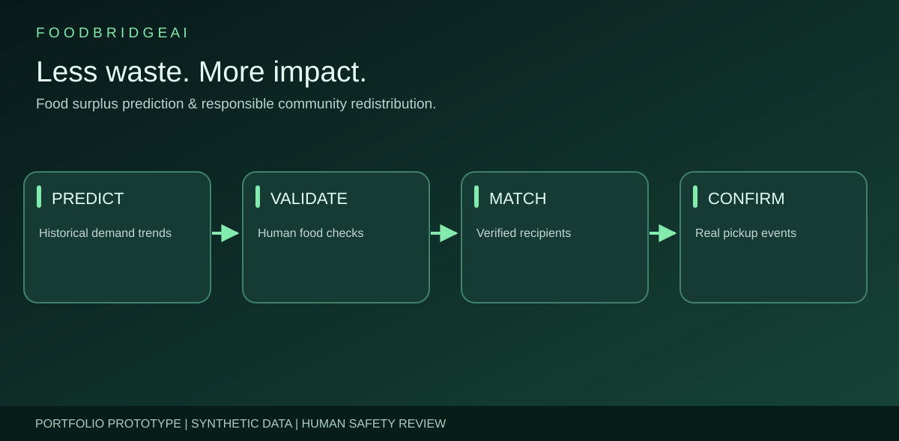
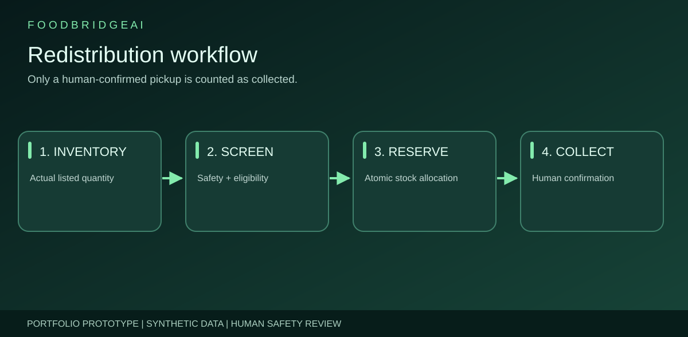

SELECTED WORK / SUSTAINABILITY · MACHINE LEARNING · FULL STACK
FoodBridge AI
Food Waste Prediction & Community Redistribution — a full-stack synthetic-data prototype for forecasting surplus, screening recipients and auditing simulated donation reservations.

Explicit safety boundary: All included donors, charities and history are fictional. The public site does not make real donations. Verification flags, food-safety acknowledgments and event logs do not certify actual food handling, independently verified charities or measurable community impact.
01 / PROJECT OVERVIEW
A practical demonstration of responsible food-surplus intelligence.
FoodBridge AI connects an offline Python demand/surplus model to a React + FastAPI inventory workflow, conservative recipient matching, reservation accounting and collection event records. The engineering goal is to prevent predicted stock from being mistaken for actual edible inventory.
02 / PROBLEM
Food surplus is more than a forecasting number.
Demand uncertainty, shelf-life, transport/storage compatibility, recipient capacity and donor verification can make redistribution unsafe or unaccountable. A tool should distinguish forecasts, listed surplus, outstanding reservations and confirmed pickups, not present them as interchangeable.

03 / ENGINEERING APPROACH
From synthetic history to accountable matching.
Data and offline ML
Reproducible synthetic daily data, validated CSV processing, past-only lag-1/lag-7/rolling-7 features, a chronological split and Random Forest evaluation against a seasonal naive baseline.
Operational state transitions
FastAPI models inventory, recipients and donations. Matches use donor acknowledgment, dates, category/storage compatibility, distance and remaining capacity; reservations use conditional database updates to prevent double allocation.
Full-stack engineering
React and Recharts overview, inventory, matching, donations, community partners and analytics pages; Docker Compose staging configuration, CI tests and a portfolio demo published via GitHub Pages.
Responsible production boundary
Production writes are denied until real multi-user identity, tenant separation, approved partners and safe handling are independently implemented and reviewed. The public browser demonstration does not use backend credentials.

04 / DELIVERABLE
Portfolio site, reusable source and an interactive synthetic demo.
The published showcase explains system design, while a standalone browser-only demo illustrates filtering and reservation decisions without processing any real donations. The full React/FastAPI app remains separate from the static website and is not publicly deployed as a production service.
05 / EVALUATION
Results verified on fictional records.
On the synthetic 164-row chronological holdout, the Random Forest one-step-ahead MAE was lower than the lag-7 baseline. These are offline metrics using historical actuals for lag features, not tested multi-day recursive forecast performance or live food savings. Review verified CI evidence ↗
06 / TRADE-OFFS & LIMITATIONS
Prioritize verifiability over exaggerated impact.
- Forecasted kilograms never create real donation stock automatically.
- Recipient verification and food-safety declarations are only fictional demonstration flags.
- Straight-line distance is not a real transport ETA or cold-chain guarantee.
- Simulated pickups, avoidable waste and meals served are not certified environmental or social outcomes.
- Real launch requires approved donors/recipients, regulated handling, security architecture, real-data validation and authorized pilot operations.